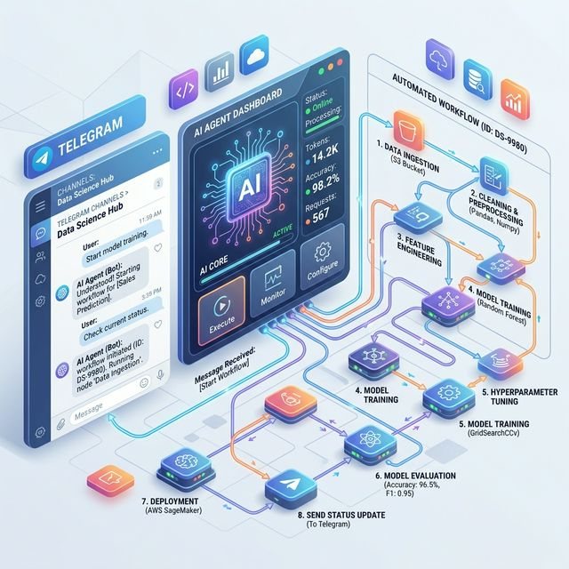

Hello, I'm
Kotha Srujana
Aspiring Data Scientist & Data Analyst | Machine Learning | Automation
Building the future of data-driven decisions. Expert in Python, SQL, and Agentic AI workflows with a passion for automating complex lifecycles using n8n and AWS.
Technical Mastery
Techniques I use to transform raw data into intelligent automation.
Programming
Python (Pandas, NumPy, Matplotlib), SQL (MySQL, Advanced Joins, Subqueries)
Agentic AI
Building intelligent agents with NLP, n8n, and Claude to automate complex decision-making processes.
Workflow Automation
Designing robust n8n workflows, API integrations, and webhook-driven automated content delivery cycles.
Data Analytics
Power BI Dashboards, KPI analysis, SeaBorn, and strategic Exploratory Data Analysis (EDA).
Hands-On Tools
Professional tools I actively utilize for data science and automation.
Python
SQL

Claude
n8n
AWS
Power BI
VS Code

Colab
Professional Experience
Direct internships and training backgrounds in high-growth environments.
Data Science Intern
Procorp Systems India Pvt Ltd, Hyderabad
- Leveraging Python, SQL, and Power BI for operational efficiency and actionable insights.
- Developing end-to-end automation workflows for video generation and intelligent chatbots using **n8n and AWS**.
- Architecting optimized SQL queries and REST APIs to reduce data latency across sources.
- Building ML models with advanced feature engineering and performance tuning.
Data Science Trainee
TechU Innovation Labs Pvt Ltd, Hyderabad
- Gained hands-on experience in Data Analytics and Data Science using Python, SQL, ML, Power BI, and Excel.
- Built and evaluated models (KNN, Linear & Logistic Regression, Decision Trees) with metrics like Accuracy and RMSE.
- Created interactive Power BI dashboards to visualize stock insights.
Education
Manipal University Jaipur
Master's in Analytics and Data Science (MBA) | 2025 - 2026
PursuingSidhdhartha Degree College for Women
Bachelor of Commerce in Generals (85%) | 2020 - 2023
Python for Data Science and Gen AI
IBM Professional Certification
SQL & Machine Learning for DS
IBM Professional Certification
Data Analytics Job Simulation
Deloitte Certified Experience
Featured Projects
Real-world automation and analytical problem solving.

AI Agent-Based Booking Automation
End-to-end automation using n8n to handle customer booking processes via Telegram AI bots.
- Built an AI-driven agent to guide users through selection and pricing.
- Implemented state-based logical workflows for dynamic multi-step interactions.
- Integrated REST APIs, Webhooks, and Telegram API for real-time automation.
- Automated data storage in Google Sheets for analytics and customer tracking.
Customer Shopping Behavior Analysis
Deep analysis pinpointing high-value purchasing patterns to drive targeted growth strategies.
- Managed end-to-end data lifecycle transforming messy datasets into high-integrity assets.
- Architected custom SQL queries to unearth insights into customer loyalty drivers.
- Launched interactive Power BI storyboards for trend visualization and stakeholder reporting.
Stock Price Prediction using ML
Predicting market movements using high-performance classification and regression algorithms.
- Collected and prepared market data using Python, cleaning for trend indicators.
- Implemented KNN, Logistic Regression, and Decision Trees with hyperparameter tuning.
- Evaluated model performance using Confusion Matrix, Accuracy, and RMSE.